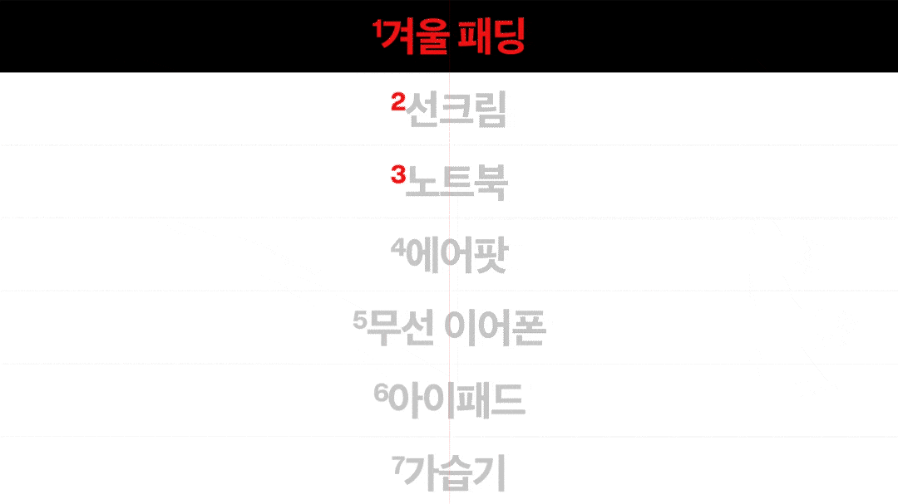
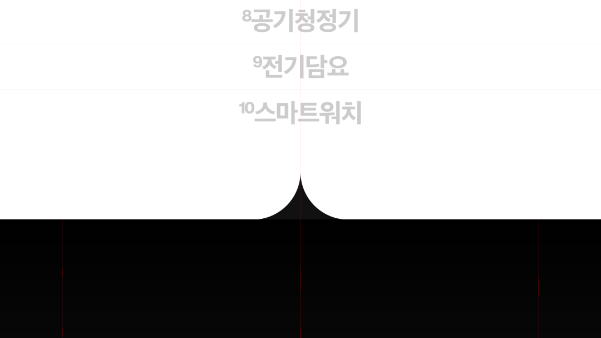

2026/02
Popular Shopping Keywords
+ 네이버 쇼핑 검색 API로 수집한 인기 키워드 10위 랭킹이에요.
+ GitHub Actions로 매일 12시(KST) 1회 네이버 쇼핑 API를 호출해 자동 수집해요.

인기 키워드 10위 랭킹 — 네이버 쇼핑 검색 API로 후보 키워드별 검색 결과 수를 조회해 상위 10개를 순위로 정리해요. GitHub Actions로 매일 12시(KST) 1회 API를 호출해 자동 수집하고, 결과를 trends-data 브랜치의 naver_shopping_sample.json에 갱신해요.

뷰어 페이지 — 매일 12시에 갱신되는 위 JSON을 trends-data 브랜치에서 fetch로 불러와 10위 랭킹을 보여줘요. 키워드를 클릭하면 네이버 쇼핑 검색 결과로 이동해요.